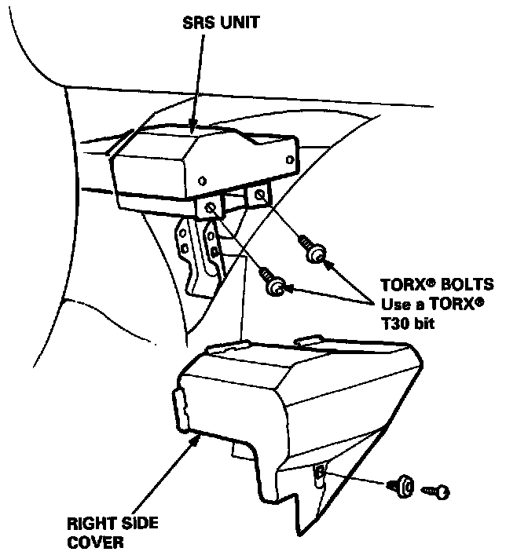
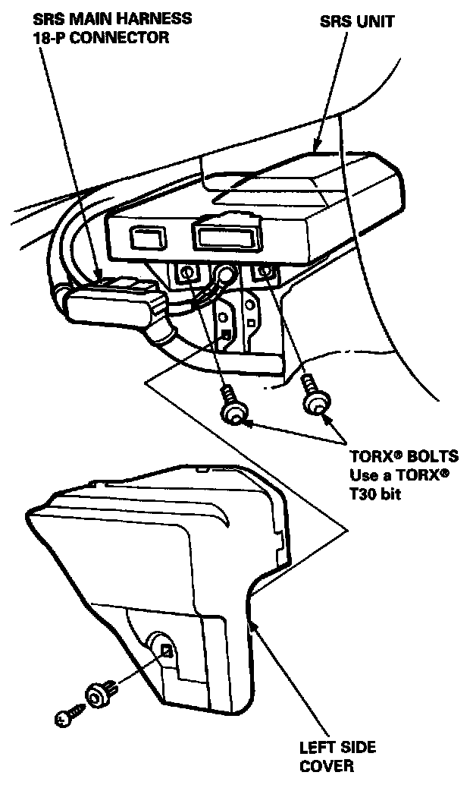
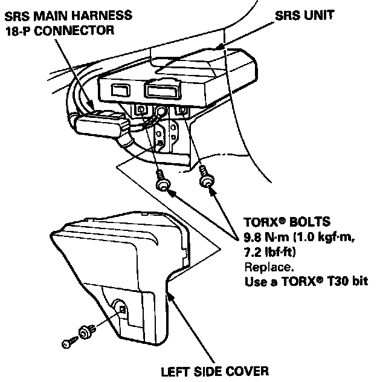
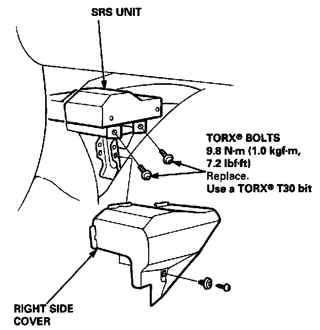

Air Bag Control Module: Service and Repair
SRS UNIT REPLACEMENTCAUTION:
^ Before disconnecting any part of the SRS wire harness, connect the short connector(s) (RED) to the airbag(s).
^ Do not damage the SRS unit terminals or connectors.
^ Do not disassemble the SRS unit; it has no serviceable parts.
^ Store the SRS unit in a clean, dry area.
^ Do not use any SRS unit which has been subjected to water damage or shows signs of being dropped or improperly handled, such as dents, cracks or deformation.
NOTE: The original radio has a coded theft protection circuit. Be sure to get the customer's code number before disconnecting the battery cables.
1. Disconnect the battery negative cable, then the positive cable.
2. Connect the short connector(s) to the airbag(s).

3. Remove the right side cover from the SRS unit.

4. Remove the left side cover from the SRS unit, then disconnect the SRS main harness 18-P connector from the SRS unit.
5. Remove the four TORX� bolts from the SRS unit, then pull out the SRS unit from the driver's side.
CAUTION: Be sure to install the SRS wiring so that it is not pinched or interfering with other car parts.
6. Install the new SRS unit.

7. Connect the SRS main harness 18-P connector to the SRS unit; push it into position until it clicks.

8. Install the SRS unit covers (right and left).
NOTE: Make sure the covers snap together in the middle.
9. Remove and properly store the short connector then reconnect the airbag connector(s) (and reinstall the glove box).
10. Reconnect the battery positive cable, then the negative cable.
11. After installing the SRS unit, confirm proper system operation: Turn the ignition ON (II): the instrument panel SRS indicator light should come on for about six seconds and then go off.
12. Enter the code number to restore radio operation.